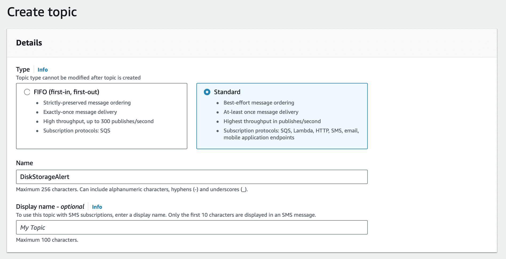
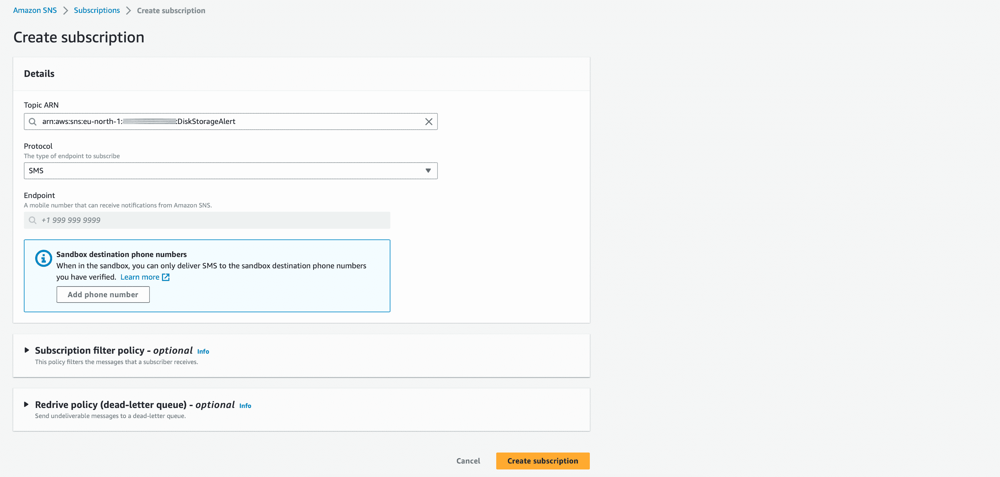
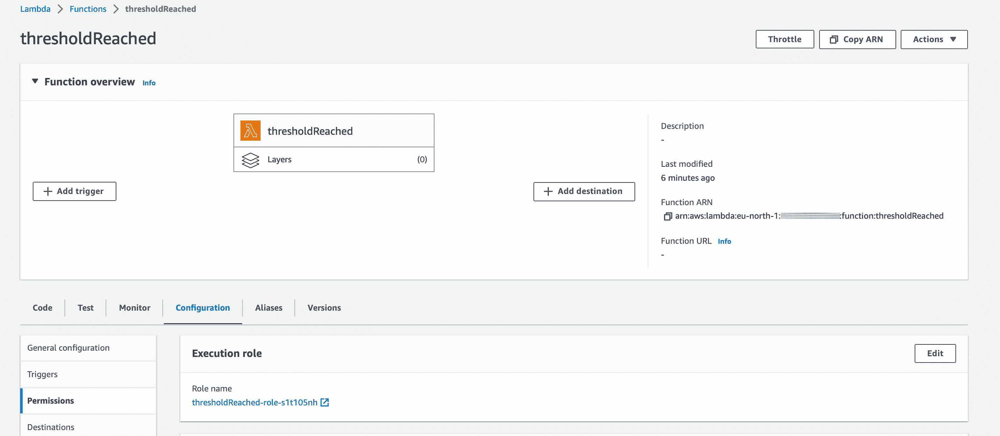
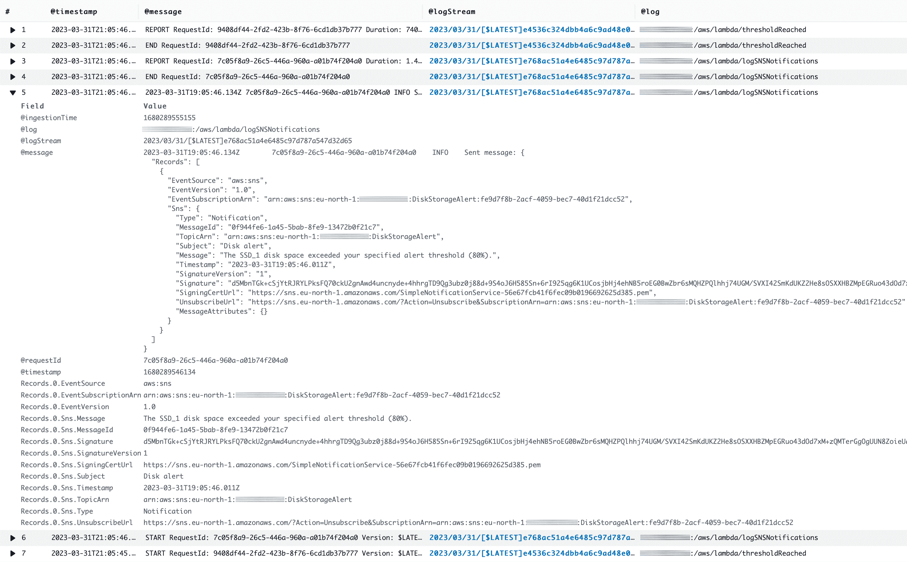

In this tutorial I will show you how to send an SMS and Email notification with Amazon Simple Notification Service and save it to CloudWatch. I will use a Lambda function to trigger the SNS service, and this Lambda function will play the role of a service checking if a disk storage goes above a threshold.
These are the steps of this flow:
Table of contents:
Before we do anything, let me explain how SNS works.
Amazon Simple Notification Service (SNS) sends notifications two ways, A2A and A2P. A2A stands for Application to Applications and means to send messages between systems, microservices and event-driven serverless applications using AWS Lambda, SQS, HTTPS and Kinesis Data Firehose. A2P stands for Application to Person and lets you send messages to your customers or employees with SMS texts, push notifications, and email.
To send messages to a group of recipients, they need subscribe to a topic first and you will send the messages to this topic.
Why publish messages to a topic rather than sending it directly to destinations, like servers or people? In many cases the same message is used by different applications or servers. Furthermore, you can subscribe a group of people to a certain topic instead of sending the messages to these people 1 by 1. Makes sense, right?
If it still doesn't, here are a few common SNS scenarios:
All messages sent to SNS are processed and delivered immediately. If a message cannot be successfully delivered on the first attempt, Amazon tries to deliver it 3 more times.
You pay based on the number of messages you publish, the number of notifications you deliver, and any additional API calls for managing topics and subscriptions. Delivery pricing varies by endpoint type. In this tutorial I sent about 10 SMS and email notifications and it cost me $§0.54.
Open Amazon SNS console. Click Topics on the left pane and then click Create topic. Select Standard for Type and add a name (I named it DiskStorageAlert. Make sure to provide a useful Topic name as it can't be changed later. Keep everything as it is and click Create topic.
We will next create a subscription to subscribe to this topic and later we'll call this topic from a Lambda function.
In the SNS console click Subscriptions on the left pane and click Create subscription. Select your Topic from the list and select a Protocol. Let's use SMS first. Provide your phone number as the Endpoint. Your phone number needs to verified before Amazon can send SMS messages to it. Click Add phone number.
Finally, click Create subscription.
All right, now let's send a test message to see if it works.
Go to Topics, select your topic and click Publish message.
For Message structure select Identical payload for all delivery protocols, because we have only one subscription for now. Type some short message in the Message body box. Click Publish message.
You should receive an SMS in a few seconds.
Let's create another subscription for getting emails.
This time select Email as Protocol and add your email as the endpoint. Every time you add an email address as a recipient to a subscription, you need to verify it. Look for an email from Amazon in your mailbox and click the link. Now refresh the page and you should see both your subscriptions with a Confirmed status:
Let's send another test message. Select your topic and click Publish message.
Now that we're going to send an email as well, let's type something as Subject. For Message structure, this time I will select Custom payload for each delivery protocol to be able to send a different message via SMS and Email. SMS messages should be short, while Email messages can include a lot more information. Change the content of the email and sms tags and leave the rest as they are. Since we don't have any more subscriptions, SNS will ignore those other endpoints.
Click Publish message. You should receive both an SMS and an email with different texting.
Allright, all this make sense only if we set up a trigger for the message.
Open AWS Lambda. Click Functions on the left pane and then click Create function. Select Author from scratch on the top and provide a Function name (I named it thresholdReached. Select Node.js 16.x as runtime environment and click Create function.
I reason I chose Node.js 16.x is because with version 18.x I always run into the Runtime.ImportModuleError: Error: Cannot find module ‘aws-sdk error. Oh, and we need an .mjs file, so if your file's extension is a .js, rename it in the file explorer on the left.
Provide you topic's ARN for TopicARN so the Lambda Function knows which topic to call.
import { createRequire } from 'module';
const require = createRequire(import.meta.url);
console.log("Loading function");
var AWS = require("aws-sdk");
export const handler = function(event, context) {
//var eventText = JSON.stringify(event, null, 2);
//console.log("Received event:", eventText);
var disk_size = 81; //let's suppose we receive this information from a system
if (disk_size >= 80) {
var sns = new AWS.SNS();
var params = {
Message: "The SSD_1 disk space exceeded your specified alert threshold (80%).",
Subject: "Disk alert",
TopicArn: "arn:aws:sns:eu-north-1:413975335361:DiskStorageAlert"
};
sns.publish(params, context.done);
}
};
And finally, assign the IAM role of the Lambda function the permission to be able to invoke the SNS. To do this, select the Configuration tab, then Permissions on the left pane. Click on the Role name.
You are now taken to the IAM console. The role has now only one permission (LambdaBasicExecutionRole). We can do 2 things here. The easier thing to do is click Add permissions, select Attach policies and select AmazonSNSFullAccess from the list. Though this is not the most secure solution because it enables your Lambda function do everything with all your SNS topics. So let's go the other way and select Create inline policy after clicking Add permission. Just select JSON and type the following:
{
"Version": "2012-10-17",
"Statement": [
{
"Action": [
"sns:Publish",
"sns:Subscribe"
],
"Effect": "Allow",
"Resource": "arn:aws:sns:eu-north-1:413975335361:DiskStorageAlert"
}
]
}
This provides your Lambda function access only to one of your Topics and restrict the access to publishing and subscribing to topics. Click Review policy, provide a name and click Create policy.
Go back to your Lambda function and click Deploy. Let's run the function by clicking Test.
Provide a test name and change the JSON to this:
{
"Message": "test message",
"Subject": "test subject"
}
Click Save and click Test. If you did everything as I wrote, you should receive an SMS and an email. This is how the email I received looks like:
What kind of IT professionals would we be, if we didn’t add the messages to CloudWatch?
The endpoint of an SNS can not only be an SMS or an Email, but a Lambda function as well. So let's create another Lambda function to log the messages and then subscribe with this Lambda function to our topic.
Again, in AWS Lambda console select Author from scratch. Provide a name, such as logSNSNotifications and select Node.js 18.x as Runtime version. Click Create function.
Once the function is created, add this code:
export const handler = function(event) {
var eventText = JSON.stringify(event, null, 2);
console.log("Sent message:", eventText);
};
Now switch to SNS console and subscribe with this Lambda function to our topic. Select AWS Lambda as Protocol and add your newly created Lambda function's ARN as Endpoint. Click Create subscription.
It was that easy. console.log() writes whatever message you want to Cloudwatch logs.
Now that we put everything together, let's run our original Lambda function again.
After you received the SMS and the email, open CloudWatch. On the left pane, select Logs then Log insights. Select the timeframe to 30m and select our 2 Lambda functions as log groups. Click Run query.
In the @log column you see which record belongs to which Lambda function. Look for a logSNSNotification record in that column and select the one where the @message column shows a timestamp. The ones with START, END and REPORT contain some AWS technical details like the request ID, the version of the Lambda function, and resource usage of the execution. Whenever you write something to the log, the @message column includes only the timestamp.
In case you have another disk with a different threshold, either create a different Lambda function for that with a separate message like The SSD_2 disk space exceeded your specified alert threshold (95%) or just call this Lambda function with disk specific parameters.
I want to show you something interesting. Since your phone is in your hand, probably you'll see the SMS once it arrives, but you only see the email when you pop up your email client (especially that these emails usually land in the Promotions and Updates tab of my Gmail). What if some messages are more important than other? We can save time and money by sending messages to a user's phone only if the message is urgent and send an email only if it is not. Or better yet, imagine that a group of customers are subscribed to a topic and you want to send similar messages to them based on the package they are subscribed to. So if they are subscribed to a gold package, offer them a higher discount than those who are subscribed to the Silver package. Or differentiate customers coming from the EU and outside the EU.
This is why Amazon offers a filter-policy so that we can subscribe to a topic based on a certain set of data.
In the SNS console edit the subscription that sends an SMS to your phone. Turn on Subscription filter policy and type this in the JSON editor:
{
"type": [
"urgent"
]
}
Add a filter policy to the email subscription as well, but this time add this:
{
"type": [
"not urgent"
]
}
Go back to your Lambda function and add a MessageAttributes parameter to the params block:
var params = {
Message: "The SSD_1 disk space exceeded your specified alert threshold (80%).",
Subject: "Disk alert",
TopicArn: "arn:aws:sns:eu-north-1:413975335361:DiskStorageAlert",
MessageAttributes: {
type: {
DataType: 'String',
StringValue: 'not urgent'
}
}
};
If you execute this function now, you will only receive the email.
That's the end of this tutorial.